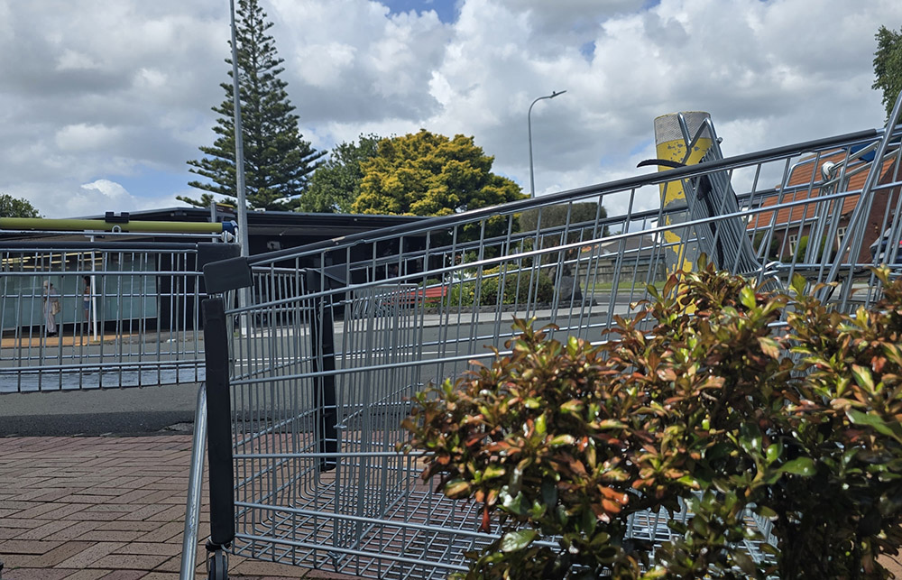

Rolling Root
Where trolleys can put down new roots
By Aliaksandr Kruhlou
Rolling Root is a community campaign designed for Milford Town, a vibrant area on Auckland’s North Shore known for its friendly, outgoing residents. Many locals here are middle-aged and enjoy spending their free time socializing and engaging in town activities—a perfect match for this project. The campaign centers on hosting a creative, hands-on event where residents and visitors collaborate to transform discarded trolleys into colorful flower beds. By blending art, gardening, and teamwork, Rolling Root aims to unite the community while beautifying public spaces, turning a shared problem into an opportunity for connection and pride.
Background
Abandoned trolleys clutter Milford’s streets, creating eyesores, safety hazards, and environmental harm. Rolling Root directly addresses this issue by repurposing these trolleys into artistic flower beds during community events. This solution not only removes the trolleys but also repurposes them as symbols of renewal, fostering environmental awareness and civic responsibility. The campaign was created to leverage Milford’s active, socially engaged residents—particularly those with free time—to drive collective action. It’s important because it tackles a persistent urban issue in a way that strengthens community bonds, enhances public spaces, and inspires lasting change through creativity and collaboration.


Promotional Video
The explainer video addresses abandoned trolleys littering Milford’s streets, exploring their negative impact on safety. Through an animatic, it visualizes our campaign’s creative solution: converting discarded trolleys into colorful flower beds to beautify public spaces. This initiative aims to transform eyesores into vibrant reminders of environmental responsibility, encouraging civic engagement.
How it works!
How does your app work? How does it contribute to your limited-edition product?
The Campaign
How are you going to reach your Target Audience/what is the campaign idea?
Why support us
Rolling Root will engage Milford’s community-oriented residents through local posters, social media, and word-of-mouth, inviting them to hands-on trolley-upcycling events. By partnering with local supermarkets, the campaign taps into their love for socializing and free time, offering a fun, creative way to tackle trolley litter while strengthening neighborhood pride.